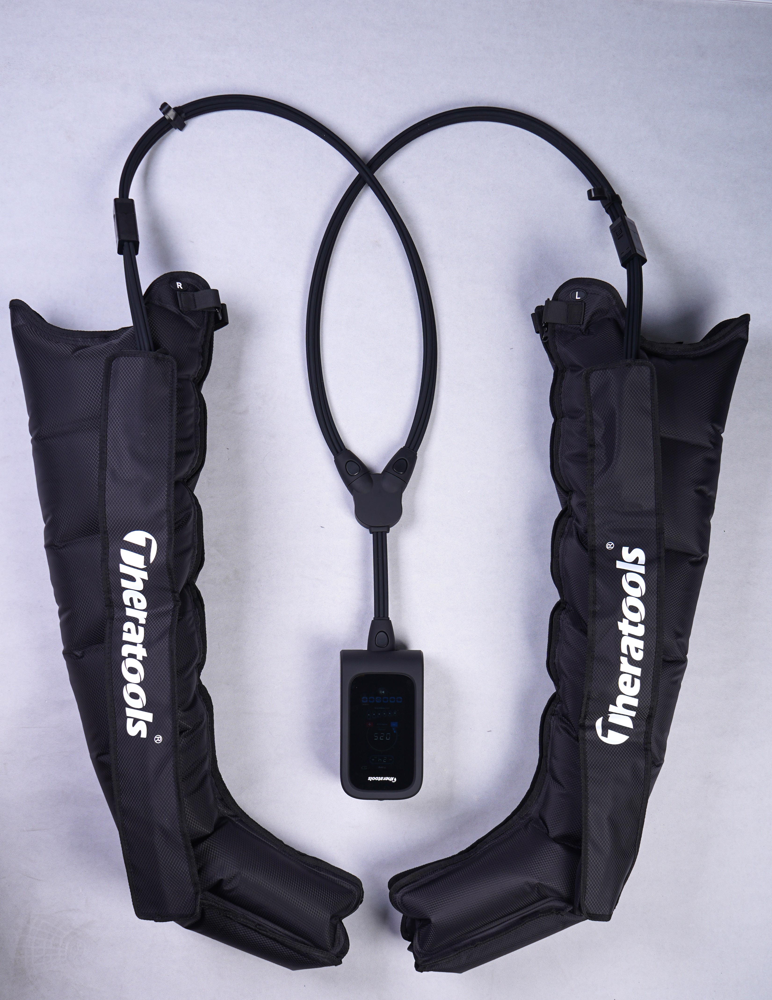
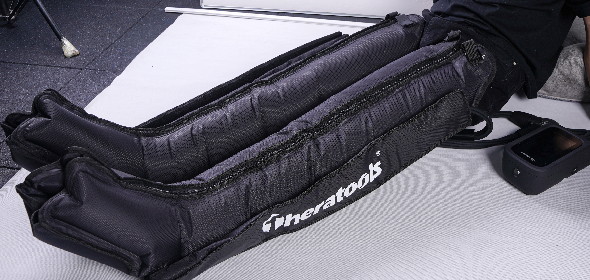
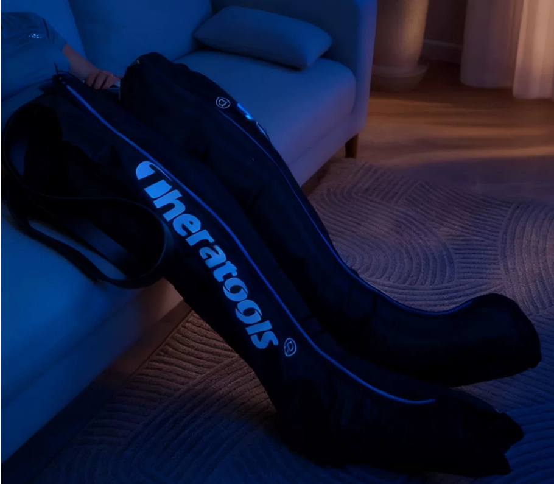
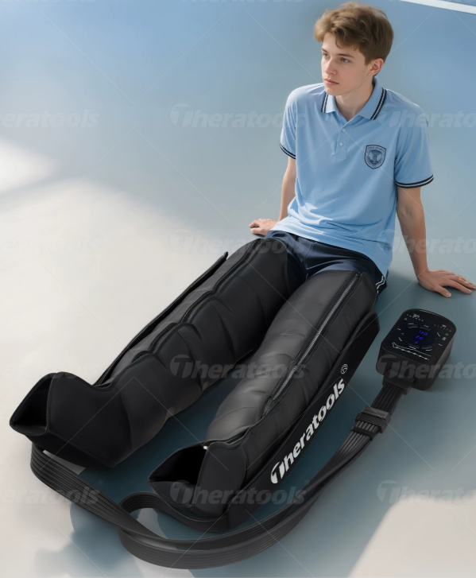

高压便携款高压便携款
最高 270 mmHg 压力，外置泵设计。轻量便携，六独立气囊覆盖足部至大腿全腿。适合追求极致压力的专业运动人群。
- 最高压力270 mmHg
- 气囊分区6 区
- 气泵外置
- 热敷 & 振动—

让专业级的恢复，不再只属于明星运动员。
真正打乱训练计划的，往往不是训练时的累，而是训练后迟迟散不去的沉、紧和胀。
跑者担心下一次配速掉下来；练腿的人担心第二天上下楼；连续比赛的人，没有一整天慢慢等身体恢复。
恢复不是练完后的奖励。
它是训练计划的下一项。
技术溯源
欧洲外科提出梯度加压概念，用于静脉曲张基础治疗，气压治疗雏形诞生。
德国、美国军方研发初代间歇气压设备，缓解士兵运动损伤、预防行军血栓。
数控气压主机问世，进入全球医院康复科、骨科、血管外科，标准化临床参数落地。
欧美职业体育引入，用于赛后乳酸代谢、软组织损伤恢复，诞生运动专用压力方案。
研发团队深耕医院康复临床 5 年，提取医用临床标准压力曲线，打造适配运动人群的空气压力波设备，打通「医院临床 → 职业运动康复」技术链路。
专业恢复
从足部、小腿、膝部到大腿，一次完成全腿恢复程序。
穿好设备，选择程序，到时自动停止。训练后更容易形成固定恢复习惯。
一个人即可操作，把手和时间留给拉伸、补水或休息。
看比赛、处理工作或在酒店休息时，都可以安静运行。
训练场、客场、酒店房间，恢复流程跟着训练计划走。
压力由远端向近端逐级移动，模拟人体肌肉泵，促进静脉与淋巴回流，区别普通同步充气。
产品对比
物理击打式
医疗级气压回流
揉捏/振动式
产品中心
Theratools 通过足部、小腿、膝部和大腿四段气囊，按照设定顺序充气和释放。压力由远端向近端移动，形成连续、有节奏的包裹感。

高压便携款高压便携款
最高 270 mmHg 压力，外置泵设计。轻量便携，六独立气囊覆盖足部至大腿全腿。适合追求极致压力的专业运动人群。

全能一体款全能一体款
内置气泵，无外管设计。在气压压缩基础上增加热敷理疗与振动按摩，打造完整恢复体验。一键开机，无需组装。
运动恢复场景
运动不同，双腿承受的压力也不同。按运动项目选择恢复重点，不用一套程序应付所有训练。
跑量往上加，恢复别落下
长距离跑步后，小腿、足底和跟腱区域承受了持续冲击。跑后用一次全腿气压程序，别把今天的公里数带进明天。
今天腿练透，明天路照走
深蹲、硬拉和腿举之后，大腿和膝周容易紧绷。训练结束就恢复，别等上下楼时才想起来。
比赛打满场，恢复别缺场
急停、起跳和变向让双腿承担不同负荷。赛后安排分区恢复，为下一次训练或比赛留出状态。

专业背书
10年
康复专业技术与培训积累
10万+
累计培训康复师与医师
50+
全球合作康复师
数百篇
出版或翻译康复专业著作
Theratools 隶属于健衡集团。我们长期从事康复专业培训，并与全球康复师保持专业合作。
我们把专业空气压力波技术重新设计成适合运动后使用的设备，再用课程、手册和标准方案帮助个人与机构真正用起来。
设备到位，方案到手，人员会用。
培训中心
Theratools 为康复师、队医、教练和机构团队提供线上课程与线下实训。
面向康复机构、运动队和专业团队。课程包括空气压力波操作规范、运动场景程序、联合恢复流程和门店项目落地。
面向康复师、教练及专业个人用户。课程包括技术发展、基础解剖、参数选择、使用禁忌和居家实操。
涵盖跑步赛后恢复、力量训练后恢复、球类运动连续比赛、专业机构标准服务流程等方案，可直接下载使用。